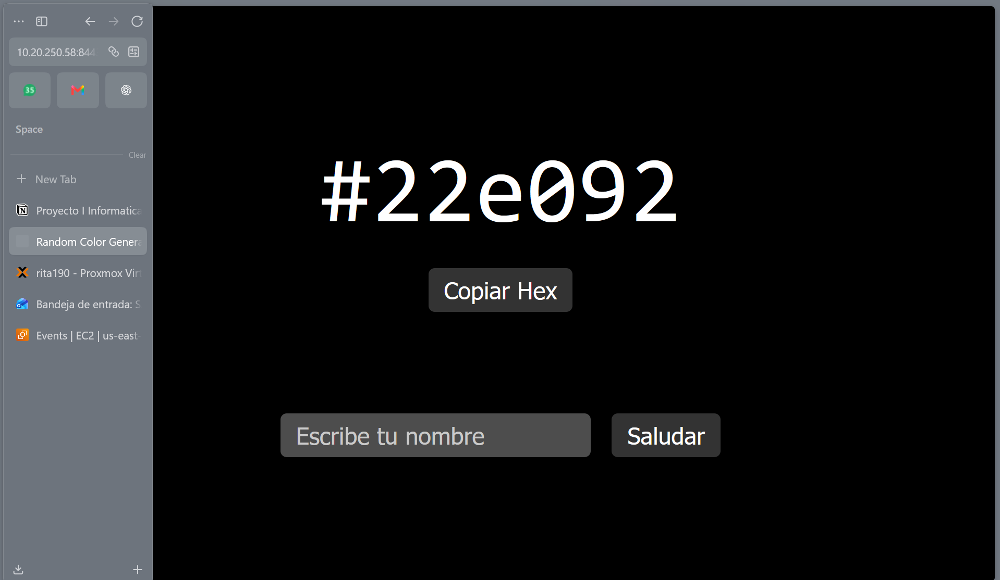
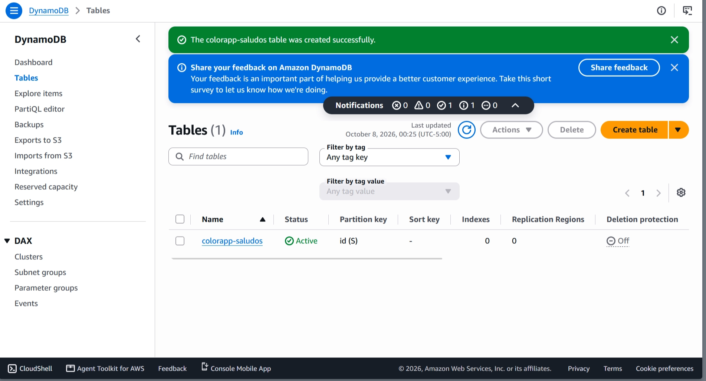
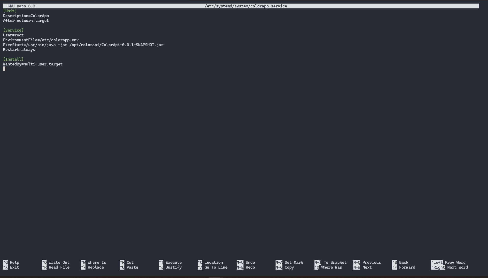
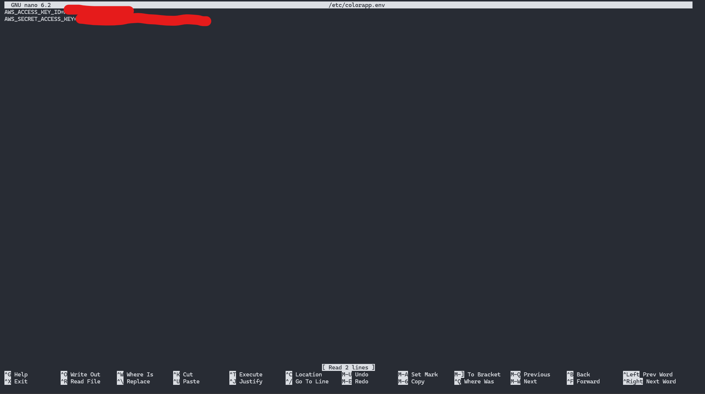
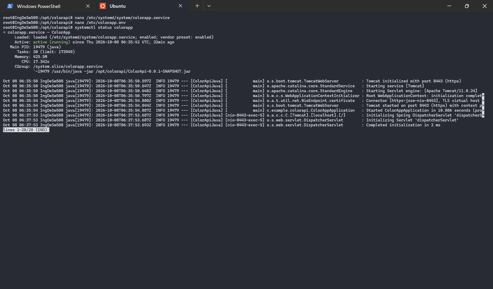
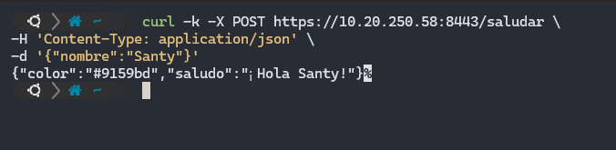
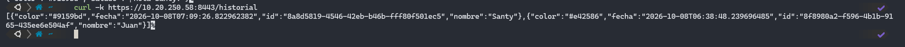
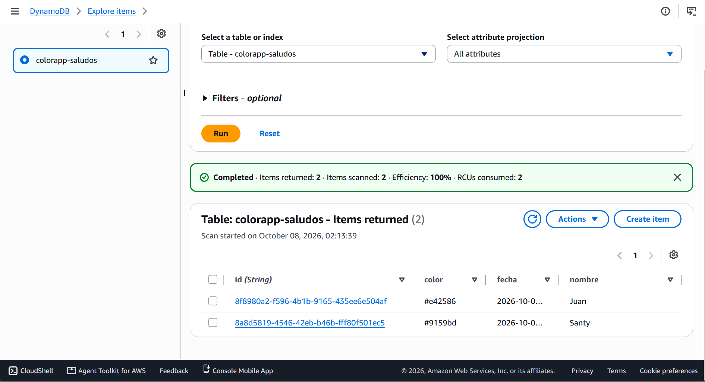
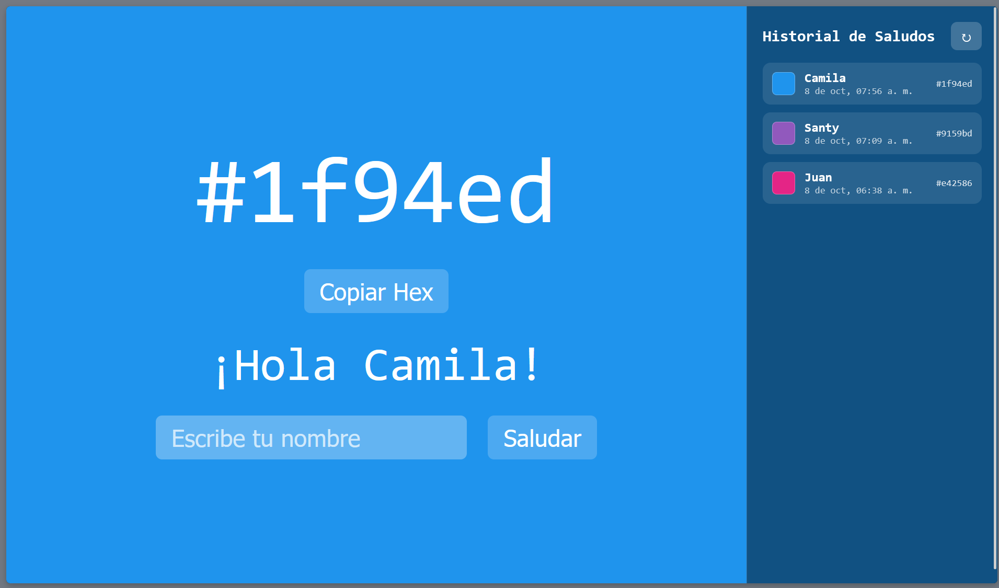

Persistencia con DynamoDB
Cómo añadimos persistencia al proyecto ColorApp conectándolo a una tabla DynamoDB en AWS y desplegándolo en un servidor Proxmox.
Introducción
Partimos de nuestro proyecto ColorApi desplegado en nuestro servidor de Proxmox.

1Tabla en DynamoDB
Entramos a nuestra consola de AWS, al apartado Create Table del servicio DynamoDB. Creamos nuestra tabla llamada colorapp-saludos con una partition key id de tipo string, ya que usaremos UUID para identificar cada uno de los registros.

colorapp-saludosCreamos nuestra tabla y esperamos a que esté activa.

2Usuario IAM y credenciales
Iremos a IAM para crear nuestro usuario, el cual nos dará las keys para poder conectarnos a la base de datos. Al usuario lo llamaremos colorApp.
Le asignamos una política de acceso mínimo limitada a nuestra tabla:
policy.json{
"Version": "2012-10-17",
"Statement": [{
"Effect": "Allow",
"Action": [
"dynamodb:PutItem", "dynamodb:GetItem",
"dynamodb:Query", "dynamodb:Scan",
"dynamodb:UpdateItem", "dynamodb:DeleteItem"
],
"Resource": "arn:aws:dynamodb:<REGION>:<ACCOUNT_ID>:table/colorapp-saludos"
}]
}Creamos esa política con el nombre colorAppTable y se la asignamos a nuestro nuevo usuario.

colorAppTable asignada al usuarioA este usuario le creamos unas access keys específicas para una app corriendo fuera de AWS, en este caso el Proxmox de la UD.

Guardamos estas keys para luego usarlas en nuestras variables de entorno en el servidor.
3Código Java
Añadimos el SDK de AWS para Java (v2) junto con el cliente mejorado de DynamoDB (dynamodb-enhanced). El BOM centraliza las versiones de todos los módulos del SDK para garantizar compatibilidad entre ellos. Tras modificar el fichero, recargamos las dependencias de Maven:
<dependencyManagement>
<dependencies>
<dependency>
<groupId>software.amazon.awssdk</groupId>
<artifactId>bom</artifactId>
<version>2.31.0</version>
<type>pom</type>
<scope>import</scope>
</dependency>
</dependencies>
</dependencyManagement>
<!-- en <dependencies> -->
<dependency>
<groupId>software.amazon.awssdk</groupId>
<artifactId>dynamodb</artifactId>
</dependency>
<dependency>
<groupId>software.amazon.awssdk</groupId>
<artifactId>dynamodb-enhanced</artifactId>
</dependency>Definimos la entidad Saludo, que representa cada registro de la tabla. La anotación @DynamoDbBean habilita el mapeo objeto-documento, y @DynamoDbPartitionKey marca el campo id como clave de partición. El campo fecha es de tipo LocalDateTime, que el SDK serializa automáticamente como cadena ISO-8601:
package com.example.colorapi;
import software.amazon.awssdk.enhanced.dynamodb.mapper.annotations.DynamoDbBean;
import software.amazon.awssdk.enhanced.dynamodb.mapper.annotations.DynamoDbPartitionKey;
import java.time.LocalDateTime;
@DynamoDbBean
public class Saludo {
private String id;
private String nombre;
private String color;
private LocalDateTime fecha;
@DynamoDbPartitionKey
public String getId() {
return id;
}
public void setId(String id) {
this.id = id;
}
public String getNombre() {
return nombre;
}
public void setNombre(String nombre) {
this.nombre = nombre;
}
public LocalDateTime getFecha() {
return fecha;
}
public void setFecha(LocalDateTime fecha) {
this.fecha = fecha;
}
public String getColor() {
return color;
}
public void setColor(String color) {
this.color = color;
}
}Creamos la configuración de Spring encargada de construir los clientes de DynamoDB. La región y el nombre de la tabla se inyectan desde application.properties mediante @Value, evitando valores hardcodeados. Se exponen tres beans: el cliente base, el cliente mejorado (que habilita el mapeo objeto-documento) y la referencia tipada a la tabla de Saludo:
package com.example.colorapi;
import org.springframework.beans.factory.annotation.Value;
import org.springframework.context.annotation.Bean;
import org.springframework.context.annotation.Configuration;
import software.amazon.awssdk.enhanced.dynamodb.DynamoDbEnhancedClient;
import software.amazon.awssdk.enhanced.dynamodb.DynamoDbTable;
import software.amazon.awssdk.enhanced.dynamodb.TableSchema;
import software.amazon.awssdk.regions.Region;
import software.amazon.awssdk.services.dynamodb.DynamoDbClient;
@Configuration
public class DynamoDbConfig {
@Value("${aws.region}")
private String region;
@Value("${aws.dynamodb.table}")
private String tableName;
@Bean
public DynamoDbClient dynamoDbClient() {
return DynamoDbClient.builder()
.region(Region.of(region))
.build();
}
@Bean
public DynamoDbEnhancedClient dynamoDbEnhancedClient(
DynamoDbClient dynamoDbClient) {
return DynamoDbEnhancedClient.builder()
.dynamoDbClient(dynamoDbClient)
.build();
}
@Bean
public DynamoDbTable<Saludo> saludoTable(
DynamoDbEnhancedClient enhancedClient) {
return enhancedClient.table(
tableName,
TableSchema.fromBean(Saludo.class)
);
}
}Implementamos el repositorio que abstrae las operaciones sobre la tabla. save persiste un registro mediante putItem, mientras que findAll recorre todos los elementos con scan. Gracias a la inyección de dependencias, el repositorio recibe la tabla tipada sin acoplarse al cliente subyacente:
package com.example.colorapi;
import org.springframework.stereotype.Repository;
import software.amazon.awssdk.enhanced.dynamodb.DynamoDbTable;
import java.util.ArrayList;
import java.util.List;
@Repository
public class SaludoRepository {
private final DynamoDbTable<Saludo> table;
public SaludoRepository(DynamoDbTable<Saludo> table) {
this.table = table;
}
public void save(Saludo saludo) {
table.putItem(saludo);
}
public List<Saludo> findAll() {
List<Saludo> saludos = new ArrayList<>();
table.scan()
.items()
.forEach(saludos::add);
return saludos;
}
}Modificamos el controlador para integrar la persistencia en el flujo. En POST /saludar se valida el nombre, se genera un UUID como identificador, se construye el objeto Saludo y se persiste antes de devolver la respuesta. Además se añade GET /historial, que devuelve todos los saludos persistidos ordenados del más reciente al más antiguo:
package com.example.colorapi;
import org.springframework.http.ResponseEntity;
import org.springframework.stereotype.Controller;
import org.springframework.ui.Model;
import org.springframework.web.bind.annotation.*;
import java.time.LocalDateTime;
import java.util.Comparator;
import java.util.HashMap;
import java.util.List;
import java.util.Map;
import java.util.Random;
import java.util.UUID;
@Controller
public class ColorController {
private final Random random = new Random();
private final SaludoRepository saludoRepository;
public ColorController(SaludoRepository saludoRepository) {
this.saludoRepository = saludoRepository;
}
private String generarColor() {
return String.format("#%06x", random.nextInt(0xFFFFFF + 1));
}
@GetMapping("/")
public String home(Model model) {
model.addAttribute("color", generarColor());
return "color";
}
@GetMapping("/color")
@ResponseBody
public Map<String, String> getColor() {
Map<String, String> response = new HashMap<>();
response.put("color", generarColor());
return response;
}
@PostMapping("/saludar")
@ResponseBody
public ResponseEntity<Map<String, String>> saludar(@RequestBody NombreRequest request) {
String nombre = request.getNombre();
if (nombre == null || nombre.trim().isEmpty()) {
Map<String, String> error = new HashMap<>();
error.put("detail", "El nombre no puede estar vacío");
return ResponseEntity.badRequest().body(error);
}
String color = generarColor();
Saludo saludo = new Saludo();
saludo.setId(UUID.randomUUID().toString());
saludo.setNombre(nombre.trim());
saludo.setColor(color);
saludo.setFecha(LocalDateTime.now());
saludoRepository.save(saludo);
Map<String, String> response = new HashMap<>();
response.put("saludo", "¡Hola " + nombre.trim() + "!");
response.put("color", color);
return ResponseEntity.ok(response);
}
@GetMapping("/historial")
@ResponseBody
public List<Saludo> historial() {
List<Saludo> saludos = saludoRepository.findAll();
saludos.sort(Comparator.comparing(
Saludo::getFecha,
Comparator.nullsLast(Comparator.reverseOrder())));
return saludos;
}
}Por último, configuramos en application.properties la región de AWS y el nombre de la tabla. Las credenciales no se definen aquí a propósito: el SDK las resuelve automáticamente desde las variables de entorno del servidor:
spring.application.name=ColorApiJava
server.port=8443
server.ssl.key-store=classpath:keystore.p12
server.ssl.key-store-password=estudiantes
server.ssl.key-store-type=PKCS12
server.ssl.key-alias=tomcat
aws.region=us-east-1
aws.dynamodb.table=colorapp-saludos4Despliegue en Proxmox
Compilamos el proyecto con ./mvnw clean package y copiamos el .jar generado al servidor, en /opt/colorapi.
Creamos el servicio de systemd:
/etc/systemd/system/colorapp.service[Unit]
Description=ColorApp
After=network.target
[Service]
User=root
EnvironmentFile=/etc/colorapp.env
ExecStart=/usr/bin/java -jar /opt/colorapi/ColorApi-0.0.1-SNAPSHOT.jar
Restart=always
[Install]
WantedBy=multi-user.target
colorapp.serviceCreamos el archivo de variables de entorno con las access keys que guardamos antes:
/etc/colorapp.envAWS_ACCESS_KEY_ID=AKIA....
AWS_SECRET_ACCESS_KEY=....
Arrancamos y habilitamos el servicio:
sudo systemctl daemon-reload
sudo systemctl enable --now colorapp
systemctl status colorapp
El servicio queda activo y la aplicación levanta en el puerto 8443.
5Pruebas
Guardamos un saludo con curl:
curl -k -X POST https://10.20.250.58:8443/saludar \
-H 'Content-Type: application/json' \
-d '{"nombre":"Juan"}'
POST /saludarConsultamos el historial:
curl -k https://10.20.250.58:8443/historial
GET /historialVemos que aparece el saludo guardado, lo que confirma que la persistencia funciona.
Por último, verificamos en la consola de AWS, en Explore items de nuestra tabla, que el registro se guardó correctamente:

colorapp-saludos6Interfaz y panel de historial
Para hacer visible la persistencia directamente en la aplicación, añadimos al frontend un panel lateral a la derecha que muestra el Historial de Saludos en vivo. El panel consume el endpoint GET /historial desde el mismo origen, por lo que no requiere ninguna configuración adicional de CORS.
En la vista añadimos el contenedor del panel, con su título, un botón de recarga y la lista de saludos:
color.html<aside id="historial-panel">
<header>
<h2>Historial de Saludos</h2>
<button id="refresh-historial" title="Recargar">↻</button>
</header>
<ul id="historial-list"></ul>
</aside>El panel es translúcido (usa backdrop-filter) para integrarse con el color de fondo aleatorio que genera la aplicación. Además, el body reserva el ancho del panel con padding-right para que el contenido principal quede centrado en el espacio restante:
#historial-panel {
position: fixed;
top: 0;
right: 0;
width: 320px;
height: 100vh;
background: rgba(0, 0, 0, 0.45);
backdrop-filter: blur(10px);
border-left: 1px solid rgba(255, 255, 255, 0.15);
}En JavaScript cargamos el historial al abrir la página, después de cada saludo y con el botón de recarga. Cada registro se ordena del más reciente al más antiguo y se renderiza con su swatch de color, el nombre y la fecha:
script.jsasync function cargarHistorial() {
const response = await fetch('/historial');
const data = await response.json();
const saludos = Array.isArray(data) ? data : [];
saludos.sort((a, b) => (b.fecha || '').localeCompare(a.fecha || ''));
renderHistorial(saludos);
}Así se ve la página final, con el color de fondo aleatorio y el panel del historial a la derecha:
